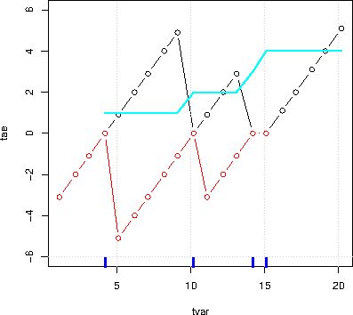
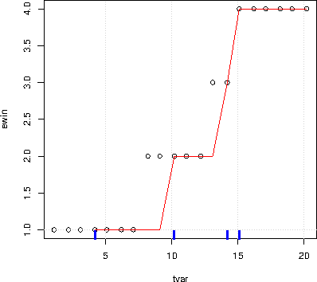
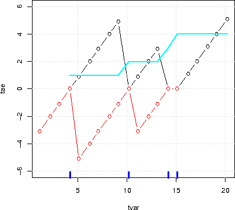
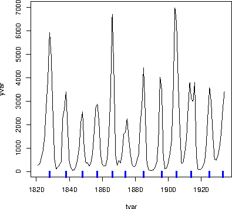
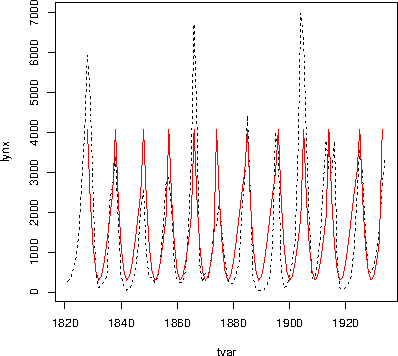
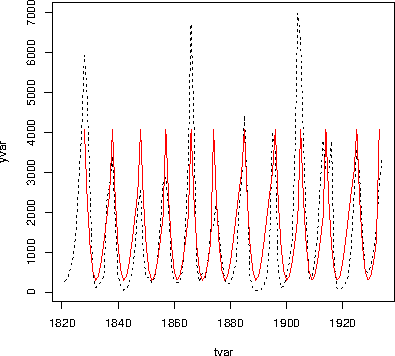

library(doBy)
data(CO2)
CO2 <- transform(CO2, Treat=Treatment, Treatment=NULL)
levels(CO2$Treat) <- c("nchil","chil")
levels(CO2$Type) <- c("Que","Mis")
CO2 <- subset(CO2, Plant %in% c("Qn1", "Qc1", "Mn1", "Mc1"))
Airquality data
The airquality
dataset contains air quality measurements in New York, May to
September 1973. The months are coded as 5,...,9.
To limit the output we only consider data for two months:
airquality <- subset(airquality, Month %in% c(5,6))Dietox data The dietox data are provided in the doBy package and result from a study of the effect of adding vitamin E and/or copper to the feed of slaughter pigs.
myfun1 <- function(x){c(m=mean(x), v=var(x))}
summaryBy(conc+uptake~Plant, data=CO2,
FUN=myfun1)
Plant conc.m conc.v uptake.m uptake.v 1 Qn1 435 100950 33.23 67.48 2 Qc1 435 100950 29.97 69.47 3 Mn1 435 100950 26.40 75.59 4 Mc1 435 100950 18.00 16.96Defining the function to return named values as above is the recommended use of summaryBy. Note that the values returned by the function has been named as m and v. If the result of the function(s) are not named, then the names in the output data in general become less intuitive:
myfun2 <- function(x){c(mean(x), var(x))}
summaryBy(conc+uptake~Plant, data=CO2,FUN=myfun2)
Plant conc.FUN1 conc.FUN2 uptake.FUN1 uptake.FUN2 1 Qn1 435 100950 33.23 67.48 2 Qc1 435 100950 29.97 69.47 3 Mn1 435 100950 26.40 75.59 4 Mc1 435 100950 18.00 16.96
summaryBy(uptake~Plant, data=CO2, FUN=c(mean,var,median))
Plant uptake.mean uptake.var uptake.median 1 Qn1 33.23 67.48 35.3 2 Qc1 29.97 69.47 32.5 3 Mn1 26.40 75.59 30.0 4 Mc1 18.00 16.96 18.9Slightly more elaborate is
mymed <- function(x)c(med=median(x)) summaryBy(uptake~Plant, data=CO2, FUN=c(mean,var,mymed))
Plant uptake.mean uptake.var uptake.mymed 1 Qn1 33.23 67.48 35.3 2 Qc1 29.97 69.47 32.5 3 Mn1 26.40 75.59 30.0 4 Mc1 18.00 16.96 18.9The naming of the output variables determined from what the functions returns. The names of the last two columns above are imposed by summaryBy because myfun2 does not return named values.
summaryBy(conc+uptake~Plant, data=CO2, FUN=myfun1, id=~Type+Treat)
Plant conc.m conc.v uptake.m uptake.v Type Treat 1 Qn1 435 100950 33.23 67.48 Que nchil 2 Qc1 435 100950 29.97 69.47 Que chil 3 Mn1 435 100950 26.40 75.59 Mis nchil 4 Mc1 435 100950 18.00 16.96 Mis chil
summaryBy(log(uptake)+I(conc+uptake)+ conc+uptake~Plant, data=CO2, FUN=myfun1)
Plant log(uptake).m log(uptake).v conc + uptake.m conc + uptake.v conc.m 1 Qn1 3.467 0.10168 468.2 104747 435 2 Qc1 3.356 0.11873 465.0 105297 435 3 Mn1 3.209 0.17928 461.4 105642 435 4 Mc1 2.864 0.06874 453.0 103157 435 conc.v uptake.m uptake.v 1 100950 33.23 67.48 2 100950 29.97 69.47 3 100950 26.40 75.59 4 100950 18.00 16.96If one does not want output variables to contain parentheses then setting p2d=TRUE causes the parentheses to be replaced by dots (".").
summaryBy(log(uptake)+I(conc+uptake)~Plant, data=CO2, p2d=TRUE, FUN=myfun1)
Plant log.uptake..m log.uptake..v conc + uptake.m conc + uptake.v 1 Qn1 3.467 0.10168 468.2 104747 2 Qc1 3.356 0.11873 465.0 105297 3 Mn1 3.209 0.17928 461.4 105642 4 Mc1 2.864 0.06874 453.0 103157
summaryBy(log(uptake)+I(conc+uptake)+. ~Plant, data=CO2, FUN=myfun1)
Plant log(uptake).m log(uptake).v conc + uptake.m conc + uptake.v conc.m 1 Qn1 3.467 0.10168 468.2 104747 435 2 Qc1 3.356 0.11873 465.0 105297 435 3 Mn1 3.209 0.17928 461.4 105642 435 4 Mc1 2.864 0.06874 453.0 103157 435 conc.v uptake.m uptake.v 1 100950 33.23 67.48 2 100950 29.97 69.47 3 100950 26.40 75.59 4 100950 18.00 16.96
summaryBy(log(uptake) ~Plant+., data=CO2, FUN=myfun1)
Plant Type Treat log(uptake).m log(uptake).v 1 Qn1 Que nchil 3.467 0.10168 2 Qc1 Que chil 3.356 0.11873 3 Mn1 Mis nchil 3.209 0.17928 4 Mc1 Mis chil 2.864 0.06874
summaryBy(log(uptake) ~ 1, data=CO2, FUN=myfun1)
log(uptake).m log(uptake).v 1 3.224 0.1577
summaryBy(conc+uptake+log(uptake)~Plant, data=CO2, FUN=mean, id=~Type+Treat, keep.names=TRUE)
Plant conc uptake log(uptake) Type Treat 1 Qn1 435 33.23 3.467 Que nchil 2 Qc1 435 29.97 3.356 Que chil 3 Mn1 435 26.40 3.209 Mis nchil 4 Mc1 435 18.00 2.864 Mis chil
x<-orderBy(~Temp+Month, data=airquality)The first lines of the result are:
head(x)
Ozone Solar.R Wind Temp Month Day 5 NA NA 14.3 56 5 5 18 6 78 18.4 57 5 18 25 NA 66 16.6 57 5 25 27 NA NA 8.0 57 5 27 15 18 65 13.2 58 5 15 26 NA 266 14.9 58 5 26If we want the ordering to be by decreasing values of one of the variables, we change the sign, e.g.
x<-orderBy(~-Temp+Month, data=airquality) head(x)
Ozone Solar.R Wind Temp Month Day 42 NA 259 10.9 93 6 11 43 NA 250 9.2 92 6 12 40 71 291 13.8 90 6 9 39 NA 273 6.9 87 6 8 41 39 323 11.5 87 6 10 36 NA 220 8.6 85 6 5
x<-splitBy(~Month, data=airquality) x
listentry Month 1 5 5 2 6 6Hence for month 5, the relevant entry-name in the list is '5' and this part of data can be extracted as
x[['5']]Information about the grouping is stored as a dataframe in an attribute called groupid and can be retrieved with:
attr(x,"groupid")
Month 1 5 2 6
sampleBy(~1, frac=0.5, data=airquality)Suppose instead that we want a systematic sample of every fifth observation within each month. This is achieved with:
sampleBy(~Month, frac=0.2, data=airquality,systematic=T)
subsetBy(~Month, subset=Wind>mean(Wind), data=airquality)Note that the statement Wind>mean(Wind) is evaluated within each month.
transformBy(~Month, data=airquality, minW=min(Wind), maxW=max(Wind), chg=sum(range(Wind)*c(-1,1)))
data(dietox) dietox <- orderBy(~Pig+Time, data=dietox) v<-lapplyBy(~Pig, data=dietox, function(d) c(NA, diff(d$Weight)/diff(d$Feed))) dietox$FE <- unlist(v)Technically, the above is the same as
dietox <- orderBy(~Pig+Time, data=dietox) wdata <- splitBy(~Pig, data=dietox) v <- lapply(wdata, function(d) c(NA, diff(d$Weight)/diff(d$Feed))) dietox$FE <- unlist(v)
x <- c(1,1,1,2,2,2,1,1,1,3) firstobs(x)
[1] 1 4 10
lastobs(x)
[1] 6 9 10The same can be done on a data frame, e.g.
firstobs(~Plant, data=CO2)
[1] 1 8 15 22
lastobs(~Plant, data=CO2)
[1] 7 14 21 28
x <- c(1:4,0:5,11,NA,NA) which.maxn(x,3)
[1] 11 10 4
which.minn(x,5)
[1] 5 1 6 2 7
x <- c(1,1,2,2,2,1,1,3,3,3,3,1,1,1) subSeq(x)
first last slength midpoint value 1 1 2 2 2 1 2 3 5 3 4 2 3 6 7 2 7 1 4 8 11 4 10 3 5 12 14 3 13 1
subSeq(x, item=1)
first last slength midpoint value 1 1 2 2 2 1 2 6 7 2 7 1 3 12 14 3 13 1
subSeq(letters[x])
first last slength midpoint value 1 1 2 2 2 a 2 3 5 3 4 b 3 6 7 2 7 a 4 8 11 4 10 c 5 12 14 3 13 a
subSeq(letters[x],item="a")
first last slength midpoint value 1 1 2 2 2 a 2 6 7 2 7 a 3 12 14 3 13 a
x <- c("dec","jan","feb","mar","apr","may")
src1 <- list(c("dec","jan","feb"), c("mar","apr","may"))
tgt1 <- list("winter","spring")
recodeVar(x,src=src1,tgt=tgt1)
[1] "winter" "winter" "winter" "spring" "spring" "spring"
head(renameCol(CO2, 1:2, c("kk","ll")))
kk ll conc uptake Treat 1 Qn1 Que 95 16.0 nchil 2 Qn1 Que 175 30.4 nchil 3 Qn1 Que 250 34.8 nchil 4 Qn1 Que 350 37.2 nchil 5 Qn1 Que 500 35.3 nchil 6 Qn1 Que 675 39.2 nchil
head(renameCol(CO2, c("Plant","Type"), c("kk","ll")))
kk ll conc uptake Treat 1 Qn1 Que 95 16.0 nchil 2 Qn1 Que 175 30.4 nchil 3 Qn1 Que 250 34.8 nchil 4 Qn1 Que 350 37.2 nchil 5 Qn1 Que 500 35.3 nchil 6 Qn1 Que 675 39.2 nchil
yvar <- c(0,0,0,1,0,0,0,0,0,1,0,0,0,1,1,0,0,0,0,0)Imagine that "1" indicates an event of some kind which takes place at a certain time point. By default time points are assumed equidistant but for illustration we define time time variable
tvar <- seq_along(yvar) + c(0.1,0.2)Now we find time since event as
tse<- timeSinceEvent(yvar,tvar)
yvar tvar abs.tse sign.tse ewin run tae tbe 1 0 1.1 3.1 -3.1 1 NA NA -3.1 2 0 2.2 2.0 -2.0 1 NA NA -2.0 3 0 3.1 1.1 -1.1 1 NA NA -1.1 4 1 4.2 0.0 0.0 1 1 0.0 0.0 5 0 5.1 0.9 0.9 1 1 0.9 -5.1 6 0 6.2 2.0 2.0 1 1 2.0 -4.0 7 0 7.1 2.9 2.9 1 1 2.9 -3.1 8 0 8.2 2.0 -2.0 2 1 4.0 -2.0 9 0 9.1 1.1 -1.1 2 1 4.9 -1.1 10 1 10.2 0.0 0.0 2 2 0.0 0.0 11 0 11.1 0.9 0.9 2 2 0.9 -3.1 12 0 12.2 2.0 2.0 2 2 2.0 -2.0 13 0 13.1 1.1 -1.1 3 2 2.9 -1.1 14 1 14.2 0.0 0.0 3 3 0.0 0.0 15 1 15.1 0.0 0.0 4 4 0.0 0.0 16 0 16.2 1.1 1.1 4 4 1.1 NA 17 0 17.1 2.0 2.0 4 4 2.0 NA 18 0 18.2 3.1 3.1 4 4 3.1 NA 19 0 19.1 4.0 4.0 4 4 4.0 NA 20 0 20.2 5.1 5.1 4 4 5.1 NAThe output reads as follows:
plot(sign.tse~tvar, data=tse, type="b") grid() rug(tse$tvar[tse$yvar==1], col='blue',lwd=4) points(scale(tse$run), col=tse$run, lwd=2) lines(abs.tse+.2~tvar, data=tse, type="b",col=3)
plot(tae~tvar, data=tse, ylim=c(-6,6),type="b") grid() lines(tbe~tvar, data=tse, type="b", col='red') rug(tse$tvar[tse$yvar==1], col='blue',lwd=4) lines(run~tvar, data=tse, col='cyan',lwd=2)

plot(ewin~tvar, data=tse,ylim=c(1,4)) rug(tse$tvar[tse$yvar==1], col='blue',lwd=4) grid() lines(run~tvar, data=tse,col='red') We may now find times for which time since an event is at most 1 as
tse$tvar[tse$abs<=1]
[1] 4.2 5.1 10.2 11.1 14.2 15.1
yvar <- as.numeric(lynx) tvar <- 1821:1934 plot(tvar,yvar,type='l') Suppose we want to estimate the cycle lengths. One way of doing this is as follows:
yyy <- yvar>mean(yvar) head(yyy)
[1] FALSE FALSE FALSE FALSE FALSE TRUE
sss <- subSeq(yyy,TRUE) sss
first last slength midpoint value 1 6 10 5 8 TRUE 2 16 19 4 18 TRUE 3 27 28 2 28 TRUE 4 35 38 4 37 TRUE 5 44 47 4 46 TRUE 6 53 55 3 54 TRUE 7 63 66 4 65 TRUE 8 75 76 2 76 TRUE 9 83 87 5 85 TRUE 10 92 96 5 94 TRUE 11 104 106 3 105 TRUE 12 112 114 3 113 TRUE
plot(tvar,yvar,type='l') rug(tvar[sss$midpoint],col='blue',lwd=4) Create the 'event vector'
yvar2 <- rep(0,length(yvar)) yvar2[sss$midpoint] <- 1 str(yvar2)
num [1:114] 0 0 0 0 0 0 0 1 0 0 ...
tse <- timeSinceEvent(yvar2, tvar) head(tse,20)
yvar tvar abs.tse sign.tse ewin run tae tbe 1 0 1821 7 -7 1 NA NA -7 2 0 1822 6 -6 1 NA NA -6 3 0 1823 5 -5 1 NA NA -5 4 0 1824 4 -4 1 NA NA -4 5 0 1825 3 -3 1 NA NA -3 6 0 1826 2 -2 1 NA NA -2 7 0 1827 1 -1 1 NA NA -1 8 1 1828 0 0 1 1 0 0 9 0 1829 1 1 1 1 1 -9 10 0 1830 2 2 1 1 2 -8 11 0 1831 3 3 1 1 3 -7 12 0 1832 4 4 1 1 4 -6 13 0 1833 5 5 1 1 5 -5 14 0 1834 4 -4 2 1 6 -4 15 0 1835 3 -3 2 1 7 -3 16 0 1836 2 -2 2 1 8 -2 17 0 1837 1 -1 2 1 9 -1 18 1 1838 0 0 2 2 0 0 19 0 1839 1 1 2 2 1 -9 20 0 1840 2 2 2 2 2 -8We get two different (not that different) estimates of period lengths:
len1 <- tapply(tse$ewin, tse$ewin, length)
1 2 3 4 5 6 7 8 9 10 11 12 13 10 9 9 9 9 11 10 9 10 10 5
len2 <- tapply(tse$run, tse$run, length)
1 2 3 4 5 6 7 8 9 10 11 12 10 10 9 9 8 11 11 9 9 11 8 2
c(median(len1),median(len2),mean(len1),mean(len2))
[1] 9.500 9.000 9.500 8.917We can overlay the cycles as:
tse$yvar <- yvar tse2 <- na.omit(tse) plot(yvar~tae, data=tse2)
plot(tvar,yvar,type='l',lty=2) mm <- lm(yvar~tae+I(tae^2)+I(tae^3), data=tse2) lines(fitted(mm)~tvar, data=tse2, col='red')